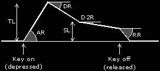

SEGA GENESIS INSTRUMENTS EDITOR MENU:

Global Values:
FMS: FMS (frequency modulation sensitivity) is the degree to which the channel is affected by the LFO.
AMS: AMS (amplitude modulation sensitivity) is the degree to which the channel is affected by the LFO.
FB: Feedback is the degree to which operator 1 feeds back into itself.
ALG: The operators may be arranged in eight different configurations, called ALG (Algorithms).
And each individual operator has this own values:
MULT: MULT ranges from 0 to 15 (decimal), and multiplies the overall frequency
DT: DT gives small variations from the overall frequency × MULT.
TL: Total level, the highest amplitude of the envelope.
AR: Attack rate, the angle of initial amplitude increase.
DR: The angle of initial amplitude decrease.
D2R: The angle of secondary amplitude decrease. This will continue indefinitely unless ‘key off’ occurs.
SL: The amplitude at which the slower amplitude decrease starts.
RR: The final angle of amplitude decrease, after ‘key off’.
RS: Rate scaling, the degree to which envelopes become shorter as frequencies become higher. For example, high notes on a piano fade much more quickly than low notes.
SSG-EG: This slider will set the SSG-EG behavior, it will modify the operator's level dinamically, following the next shapes:
AM Checkbox: Amplitude Modulation enable, whether or not this operator will allow itself to be modified by the LFO. Changing the amplitude of the slots (those colored gray in the diagram on page 3) changes the loudness of the note; changing the amplitude of the other operators changes its flavor.
SSG-EG Checkbox: SSG-EG control enable, this control will enable or disable the above explained slider (SSG-EG).

The sound starts when the key is depressed, a process called ‘key on’. The sound has an attack, a strong primary decay, followed by a slow secondary decay. The sound continues this secondary decay until the key is released, a process called ‘key off’. The sound then begins a rapid final decay, representing for example a piano note after the key has been released and the damper has come down on the strings.
The envelope is represented by the above amplitudes and angles.